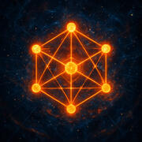
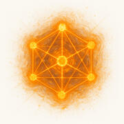

Orgs in the Age of AI
Businesses designed as adaptive, data-driven, AI-native systems from the ground up.
Orgtype empowers you to transform your company into a living, programmable system ready for the future.
It is composable by design: no reengineering required. With Orgports and the Orgmind Protocol, Orgtype
snaps onto your existing tools and workflows without disrupting your systems.
Define your entire organization in code: structure, roles, and processes. Make your business
machine-readable and adaptable, moving from AI-powered automation to AI-powered execution.

Orglang
The language of your organization: a clear, expressive syntax for defining roles, workflows, and
business logic. It makes structure and process transparent, adaptable, and ready for automation.
With Orglang, you can codify your org's structure and processes, making them transparent, adaptable,
and ready for automation. It is the foundation for building a truly programmable enterprise.

Orgputer
The runtime engine that brings your programmable organization to life, executing Orglang logic and
orchestrating teams, tasks, and data flows with precision.
Think of Orgputer as a distributed work processing network that ensures your business runs smoothly,
efficiently, and in sync with your goals.

Orgbase
Your organization's unified memory and knowledge layer, capturing context and institutional wisdom for
both humans and AI agents.
With Orgbase, your Org learns from every interaction, continuously improving decision-making and
operational effectiveness.

Orgtrack
Define OKRs and KPIs directly in Orglang for planning and accountability. Human and AI agents receive
real-time intelligence for driving growth.
Orgtype's AI-powered system provides real-time monitoring and feedback. This drives data-driven growth
and ensures everyone is aligned and on track.

Orgports and Orgflow
Smart observational probes plug into existing tools with zero disruption. Orgports feed the Orgmind
Protocol, a lightweight integration standard for vendor-agnostic orchestration.

Living Org Twins
Orgworker
AI-powered twins of every job role. Orgworkers integrate human and AI agents for continuous growth
under executive control.
Bring your organization to life as a dynamic digital twin that learns, evolves, and responds in real
time. Orgcells are composed of one or more Orgworkers and form agile, mission-driven teams that adapt
quickly to change, in alignment with Orgs.

Orgmind
Your native AI assistant, deeply integrated with organizational purpose and memory. Orgmind provides
real-time insights and proactive support to leaders, Org members, and their digital twins.
Orgmind helps you navigate complexity, anticipate challenges, and drive your business forward with
confidence.